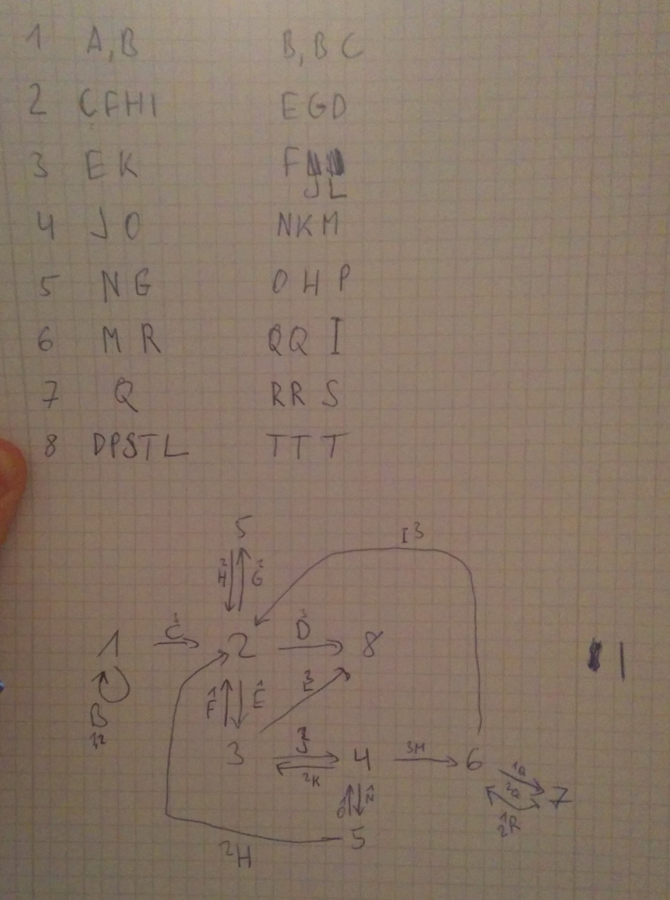

Automata is a 32 bit Linux ELF binary and listens on a TCP port on the organizer network - one basically has to exploit it. However the binary just wants a command and a verification code as input - and if the code is correct for the given command, it will execute the command.
58.229.183.18 8181 (intermapper) open
[=] Welcome to Automata System [=]
[*] Enter your command: ls
[*] Enter your code: code
[!] Wrong code
Reversing Automata
The binary is relatively simple, it uses the standard forking socket server template common in many CTF services. In the actual service logic, it sends the instructions to the client and receives the command and code. For both it uses one recv(51) call and ends the buffer with a null-byte. Afterwards it calls strtok(buf, " \t\r\n\"'") on the resulting buffer, which overwrites the first delimiter with a null-byte, so that basically neither command nor code can have any whitespace in them.
After receiving the inputs, a first verification stage occurs. For this, the command is checked with the following function.
check_command(const char *cmd, int *output) {
tmp = 0;
for ( i = strlen(cmd); i > 0; --i )
tmp = 37 * (tmp + cmd[i - 1]);
output[1] = tmp % 0x11 + 1;
output[2] = (tmp & 0xF) + 1;
output[0] = 43 - output[1] - output[2];
}
It basically calculates 3 numbers, which are important for the next part - the verification code needs to have an appropriate number of characters in it:
count_3 = 0; count_2 = 0; count_1 = 0;
for ( i = 0; i < strlen(code); ++i ) {
m = code[i] % 16;
if ( m == 2 )
++count_2;
else {
if ( m == 3 )
++count_3;
else {
if ( m != 1 )
wrong_code_do_exit(socketfd);
++count_1;
}
}
}
if ( command_check[0] != count_1 || command_check[1] != count_2 || command_check[2] != count_3 )
wrong_code_do_exit(socketfd);
What this means is that the verification code needs to have an appropriate amount of a, b, c characters in it for the previously computed numbers on the command.
The Automaton
After the initial verification stage, the more complicated part is reached. The binary creates subprocesses and pipes, sets up signal handling for signals 10 and 12 and then sits in a tight loop. The subprocesses and pipes represent the automaton - basically the processes are states and transitions occur by writing a number through the pipes.
Automaton creates 8 subprocesses and 20 pipes.
Each process reads from a few pipes (1-5) and writes to one of three output pipes. The automaton basically takes the code received earlier as input. The characters a,b,c in the code make the automaton transition from state to state.
The code executing in a subprocess looks like this:
proc_1 = fork();
if ( !proc_1 ) {
while ( 1 ) {
while ( read(fd + 1, &progress_counter, 4u) == -1 && read(fd + 3, &progress_counter, 4u) == -1 )
;
send_progress_to_fd(fd, progress_counter);
// make_transition_write_pipe(char * code, (int *) progress, fd1, fd2, fd3, signal_number)
make_transition_write_pipe(code, &progress_counter, fd + 4, fd + 4, fd + 6, 10);
}
}
It turns out that the parent will execute the command if it receives signal 10 and just says Wrong code and exits on signal 12.
parent_signal_handler(int signum) {
if ( signum == 10 ) {
kill_child_procs();
success_system_exec(sockfd);
}
if ( signum == 12 ) {
kill_child_procs();
wrong_code_do_exit(sockfd);
}
}
The signal is sent by either of the child processes when the character at position 43 in the code is processed. All subprocesses use signal 10, except for the last process (number 8). So that last process #8 represents the end-state and we need to make sure that we do not enter that state with our input because it turns out that state 8 will only transition to itself.
{kind=link}
Command and Code
Alright so we need to figure out a command that will get us the key and we can't have any whitespace in there. However as it is a forking socket-server, the socket fd will be the same number in every child - it is fd 4. So how about cat<key>&4 - this will be executed by automata through the system() library function - inherits the parent descriptors and thus gives us the key.
We determine the amount of a,b,c characters needed for the first verification step: 39 As, 2 Bs and 2 Cs
Then we look at our drawing and figure out an order that stays away from state 8: cabcaaaaaaaaaaaaaaaaaaaaaaaaaaaaaaaaaaaaaab
Fingers crossed and fire:
58.229.183.18 8181 (intermapper) open
[=] Welcome to Automata System [=]
[*] Enter your command: cat<key>&4
[*] Enter your code: cabcaaaaaaaaaaaaaaaaaaaaaaaaaaaaaaaaaaaaaab
[*] Verifying your code
[!] Registered
F4ILUrE_Is_N0T_an_O0PtI1On
This challenge was pretty cool - the reversing was relatively simple, but the states and pipe numbers had to be kept track off in a very exact way. I misplaced around two transitions on my paper drawing and it took me an hour to figure that out :)
Anyway, good fun!
-- mark